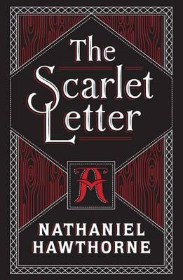

People who read literary fiction, stories that explore the inner lives of characters show a heightened ability to understand the feelings and beliefs of others. There are many benefits of reading fiction such as improved neural connectivity in the brain, improved analytical skills, memory, and vocabulary. Many factors are involved to put these benefits into practice, but in a short answer, yes, reading fiction can make you smarter. Whether you read on a kindle or from a paperback, the benefits are endless.
Variety type of book
Suitable for all ages group
Bring up good reading habits
There is always one that you will like
Name : Nineteen Eighty-four
Author : George Orwell
Publisher : Secker & Warburg
Publication date : 8 June 1949
Pages : 328
Language : English
Orwell wrote Nineteen Eighty-four as a warning after years of brooding on the twin menaces of Nazism and Stalinism. Its depiction of a state where daring to think differently is rewarded with torture, where people are monitored every second of the day, and where party propaganda trumps free speech and thought is a sobering reminder of the evils of unaccountable governments. Winston is the symbol of the values of civilized life, and his defeat is a poignant reminder of the vulnerability of such values in the midst of all-powerful states.
Name : To Kill a Mockingbird
Author : Harper Lee
Publisher : J. B. Lippincott & Co.
Publication date : July 11, 1960
Pages : 281
Language : English
To Kill a Mockingbird is both a young girl’s coming-of-age story and a darker drama about the roots and consequences of racism and prejudice, probing how good and evil can coexist within a single community or individual. The plot of To Kill a Mockingbird was inspired in part by his unsuccessful youthful defense of two African American men convicted of murder. Criticism of the novel’s tendency to sermonize has been matched by praise of its insight and stylistic effectiveness.
Name : Heart of Darkness
Author : Joseph Conrad
Publisher : Blackwood's Magazine
Publication date : 1899 serial; 1902 book
Country : United Kingdom
Language : English
Heart of Darkness is occupying an ever-changing position in the literary canon: no longer as an elucidatory text that reveals the depths of human depravity, but as an artifact that is the product of such depravity and which reproduces it in its own right. The question then becomes: Does the Heart of Darkness still belong in the West’s literary cannon? And if so, will it always?

Name : The Scarlet Letter
Author : Nathaniel Hawthorne
Publisher : Ticknor, Reed & Fields
Publication date : 1850
Country : United States
Language : English
The scarlet letter A that Hester is forced to wear is finely embroidered with gold-coloured thread. As both a badge of shame and a beautifully wrought human artifact, it reflects the many oppositions in the novel, such as those between order and transgression, civilization and wilderness, and adulthood and childhood. The more society strives to keep out wayward passion, the more it reinforces the split between appearance and reality.
Name : Nineteen Eighty-four
Author : George Orwell
Publisher : Secker & Warburg
Publication date : 8 June 1949
Pages : 328
Language : English
Orwell wrote Nineteen Eighty-four as a warning after years of brooding on the twin menaces of Nazism and Stalinism. Its depiction of a state where daring to think differently is rewarded with torture, where people are monitored every second of the day, and where party propaganda trumps free speech and thought is a sobering reminder of the evils of unaccountable governments. Winston is the symbol of the values of civilized life, and his defeat is a poignant reminder of the vulnerability of such values in the midst of all-powerful states.